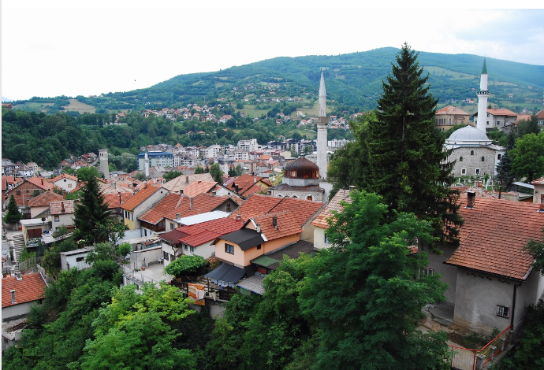

Стеван Ст. Мокрањац: Чeтpнаеста Руковeт (1908)
Stevan St. Mokranjac: Quatorzième Guirlande (1908)
"Песме из Босне - Chants de Bosnie"

Travnik
|
|
|
|
Везе ка песмама 1 - 5 -oOo- Liens vers les chants 1 - 5

Чeтpнаеста Руковeт
Изводи Хор РТВ-а Београд. Диригент: Младен Јагушт (мајор)
Хор Радио-телевизије Београд ред. Младен Јагушт (1. мај)
NOTE
|
Песме из Босне у 14. Руковети карактерише широка мелодијска скала. То је посебно видљиво у првој песми „Кара мајка Алију” и четвртој песми „Штоно ми се Травник замаглио”. Друга песма "Свака птица у шумици" је меланхолична, док је трећа песма "Девојка виче" веома светла. Завршну песму "Узрасто је зелен бор" обележила је промена од спорог почетка до живахне обраде. Извор: Википедиjа |
Ce qui caractérise les chants de Bosnie de la 14e Rukovet c'est l'étendue de la palette mélodique. C'est particulièrement frappant dans le premièr chant "Kara majka Aliju" et dans le quatrième "Štono mi se Travnik zamaglio". Le deuxième chant "Svaka ptica u šumici" a un caractère mélancolique, tandis que le troisième "Devojka viče" est très lumineux. Le chant final, "Uzrasto je zelen bor", est marqué par un changement de rythme: lent au début, il devient animé au fur et à mesure qu'il se développe.. Source: Wikipédia |